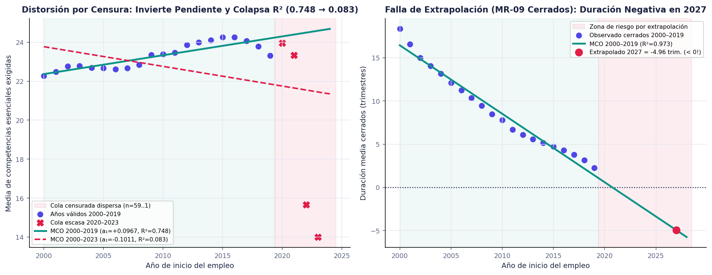

JobPath (MineriaProtect): análisis de 1,993,291 registros laborales crudos de JobHop v2 enriquecidos con el catálogo europeo ESCO v1.2.1 (3,039 oficios). Este caso demuestra cómo 4 años censurados (2020–2023) invierten la recta MCO y cómo extrapolar una recta con R² = 97.29 % predice duraciones negativas en 2027.
~es_vigente (MR-09)Entre 2000 y 2019 hay entre 11,382 y 133,578 inicios anuales (1,509,997 en total). Pero al cerrar la captura del dataset, en 2020–2023 solo quedan 59, 3, 3 y 1 registros. Por elevar errores al cuadrado y estar en el extremo derecho, esos 4 años voltean la recta de mean_skills (+0.0967 → −0.1011) y desploman R² a 8.26 % (🔴 Rechazado MR-06).
MR-09Excluir empleos aún activos (~es_vigente) elimina el falso rebote de 2019 (6.61 → 8.31 pasa a caída limpia 3.14 → 2.27, R² = 97.29 %), pero persiste el tope calendario: un empleo iniciado en 2019 y ya cerrado no pudo durar 10 años.
Tu café caliente baja 4 °C por minuto durante los primeros 10 minutos (de 80 °C a 40 °C). Si extrapolas esa misma recta hasta el minuto 30 sin pensar en la física, la fórmula predice −40 °C (congelado).
Exactamente igual ocurre aquí: la recta de duración cerrada atraviesa el cero en 2020.74, cae a −0.20 trimestres en 2021 y llega a −4.96 trimestres en 2027 (físicamente imposible).
. avanza
t = año − 2000, de 0 a 19).yᵢ = dato real anual; ŷ(t) = valor predicho por la recta.−0.7926 trim./año).t = 0 (año 2000: 16.4417 trim.).n = 20, 2000–2019).(9.5, 8.9120) por donde siempre cruza la recta (MR-01).Sₜ, Sᵣ, R², Sy/x)yᵢ − ŷᵢ: error vertical en cada año (∑eᵢ ≈ 0).429.4119).11.6484).97.29 %). Si < 30 % → rechazo MR-06.0.8044).20 − 2 = 18, por estimar a₀ y a₁, MR-02).t = año − 2000 explicado símbolo por símbolo (4,672× más precisión). avanza
t = 0 en 2000; t = 27 en 2027).+1,601.64 sin sentido en el año 0 d. C.).2020.74): desde 2021 predice negativo.x = 2000..2019): Cancelación numérica20(80,762,470) − (40,190)² = 1,615,249,400 − 1,615,236,100 = 13,300. Restar dos cifras de 1.615 mil millones que coinciden en 5 dígitos provoca pérdida de precisión en float64 (diff vs. polyfit: 1.66 × 10⁻¹¹).
t = 0..19): 4,672× mejor20(2,470) − 190² = 49,400 − 36,100 = 13,300. Deja a₁, R² = 0.9729 y Sy/x = 0.8044 idénticos, pero reduce la discrepancia frente a numpy.polyfit a 3.55 × 10⁻¹⁵.
2000 a 2027)2000–2027)Guía rápida (MR-05 · MR-09): puntos oscuros = promedios cerrados 2000–2019; puntos ámbar = cola censurada 2020–2023; la recta punteada cruza cero en 2020.74 y cae a −4.96 en 2027.

mean_skills y colapsa R² (0.748 → 0.083). Derecha: sobre empleos cerrados (~es_vigente, R² = 0.9729), extrapolar predice −4.96 trimestres en 2027.01_rawrl04_ols_regime_comparison.csv)| Variable | Régimen | a₀ | a₁ | R² | Diff polyfit |
|---|---|---|---|---|---|
| mean_skills | Centrado (t−2000) | 22.3672 | +0.0967 | 0.7475 | 7.11e-15 |
| mean_skills | 2000–2023 (cola) | 225.93 | −0.1011 | 0.0826 | 7.53e-12 |
| mean_dur_q | Sin centrar (año) | 1,601.64 | −0.7926 | 0.9729 | 1.66e-11 |
| mean_dur_q | Centrado (t−2000) | 16.4417 | −0.7926 | 0.9729 | 3.55e-15 |
| mean_green | Centrado (t−2000) | 0.0240 | −0.00012 | 0.6592 | 2.44e-19 |
| mean_green | 2000–2023 (cola) | 0.8593 | −0.00042 | 0.1714 | 2.19e-14 |
01_raw (archivos crudos originales · 1.99M filas)| Archivo Crudo | Filas totales | 2000–19 | Pend. %/año | Diff polyfit |
|---|---|---|---|---|
| JobHop_v2_train | 1,594,827 | 1,337,511 | +0.1855 | 3.35e-12 |
| JobHop_v2_test | 198,877 | 166,437 | +0.1808 | 2.90e-12 |
| JobHop_v2_val | 199,587 | 167,401 | +0.1848 | 3.24e-12 |
Mapa de capas data/ en este caso: lee directamente 01_raw/ (paridad), 02_interim/ESCO/greenShareOcc_en_limpio.csv (mean_green) y 03_processed/empleos_unificado_limpio.csv (serie anual). 04_transformed/ no aplica aquí.
MR y glosario completo59, 3, 3, 1 registros invierten una recta de 20 años (R²: 74.8 % → 8.3 %, rechazo MR-06).t = año − 2000: ganas interpretabilidad (a₀ = 16.44) y 4,672× más estabilidad numérica, sin cambiar R².MR-07, MR-08 y MR-09: no afirmes causalidad, atribuye mean_skills al oficio ESCO y usa siempre empleos cerrados (~es_vigente).MR-05): jamás extrapoles donde la recta predice duraciones < 0.01_raw / 02_interim / 03_processed: capas solo lectura de data/ (crudos JobHop, catálogos ESCO y dataset unificado limpio).t − 2000).greenShare / mean_green: fracción de habilidades verdes exigidas por el oficio ESCO asignado al cargo (MR-08).MR-06 / MR-07 / MR-08 / MR-09: rechazo R²<0.30, no causalidad, atribución al oficio ESCO y solo empleos cerrados (~es_vigente).Sₜ / Sᵣ / Sy/x: variación total, suma de residuos al cuadrado y error típico vertical (con n − 2 gl).